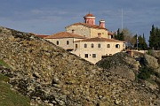
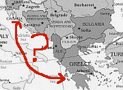

Greece :: A Closer Look

|
ThessalonikiHidden away amongst the apartment blocks of Thessaloniki are treasures that bear witness to the many influences that have marked the city's history: Classical, Byzantine, Muslim, Jewish, and modern Greek. There are churches and fortresses, wide boulevards and narrow hilly streets, lively nightlife, interesting restaurants, and some fine museums. In contrast to Athens, you can enjoy these sights without competing with busloads of tourists. Find out more by reading this introduction to one of my favourite Balkan cities. |

|
The Province of MacedoniaThe northern province of Macedonia stands somewhat apart from the rest of Greece. There are more grey skies here than in the typical postcard images of the country, but there is no lack of colour: in the frescoes of mediaeval churches, the painted facades of old Ottoman houses, or the black-and-yellow Byzantine flag that flutters outside many churches and public buildings. Among the province's highlights are Vergina, Veria, Edessa, and Kavala. |
|  |
MeteoraThroughout the Balkan region, monks have historically chosen isolated and beautiful landscapes in which to carry out their devotions in peace and safety. Few of these locations can match the monasteries of Meteora for either beauty or isolation. Perched on top of towers of sheer dark rock, the monasteries seem already to be half way to another world. The unusual landscape on its own would be reason enough for a visit; the combinaton of natural and cultural attractions makes Meteora one of the biggest draws in mainland Greece. This article offers some hints on how to make the most of your visit. |
|  |
How to travel from Croatia to Greece (and vice versa)A whole page devoted to the single most common question asked by visitors to this site: what is the best way to get from Croatia to Greece? |